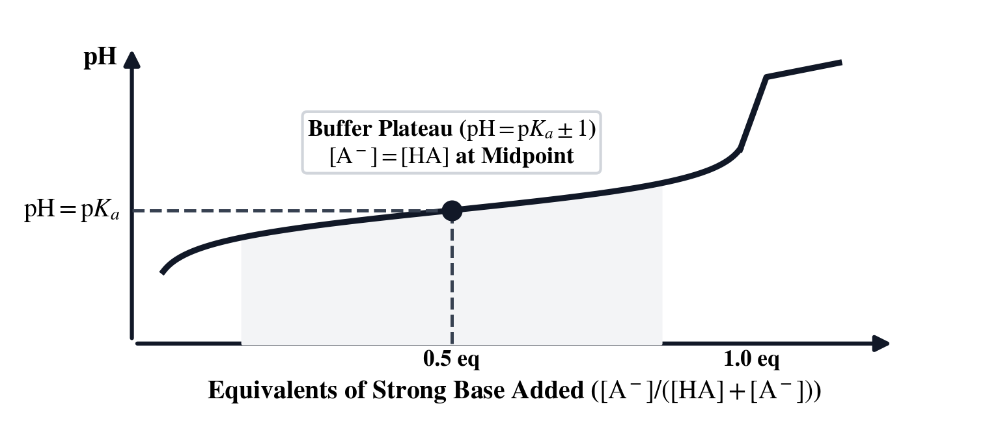
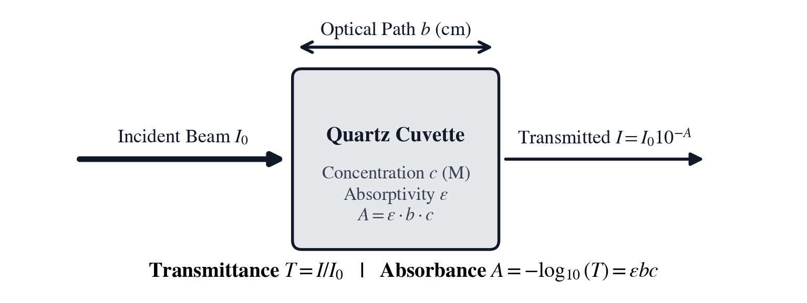
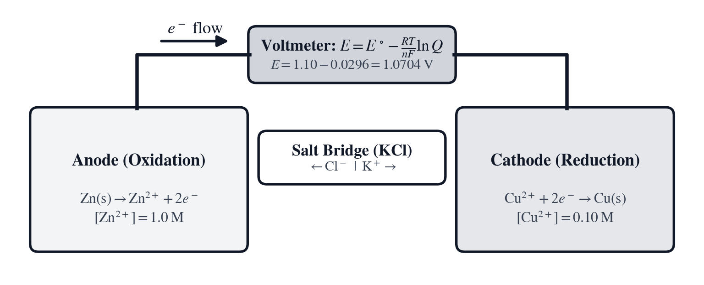
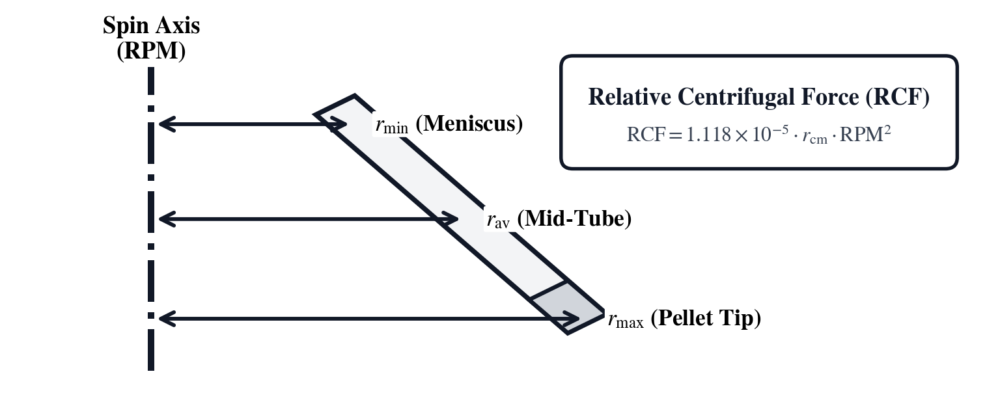

Unit VI: Stoichiometry, Chemical Equilibrium & Wet-Lab Analytics
In September 1860, at the First International Congress of Chemists in Karlsruhe, Germany, the Italian chemist Stanislao Cannizzaro distributed a printed pamphlet reviving the 1811 molecular hypothesis of his countryman Amedeo Avogadro: equal volumes of gases at the same temperature and pressure contain equal numbers of molecules, and elemental gases such as hydrogen, nitrogen, and oxygen travel as diatomic pairs (\(\text{H}_2, \text{N}_2, \text{O}_2\)). Every chemical reaction proceeds between discrete integer counts of atoms and molecules—when citric acid neutralizes sodium bicarbonate in aqueous solution (\(\text{C}_6\text{H}_8\text{O}_7 + 3\,\text{NaHCO}_3 \longrightarrow \text{Na}_3\text{C}_6\text{H}_5\text{O}_7 + 3\,\text{H}_2\text{O} + 3\,\text{CO}_2\uparrow\)), one molecule of citric acid reacts with three molecules of sodium bicarbonate—yet individual molecules measure roughly a nanometer across and weigh on the order of \(10^{-22}\text{ grams}\). By defining the mole (\(\text{mol}\), [g] [▸mol]) as \(N_A = 6.02214076 \times 10^{23}\) elementary entities, Avogadro and Cannizzaro erected the stoichiometric bridge connecting integer chemical formulas ([FML], [Z], [f] [ION], [f] [w/w]) to macroscopic gram masses ([MW]) weighed on an analytical balance and dissolved to known Molarity ([f] [RXN], [f] [▸M], [g] [▸mM], [g] [▸g/L]) or diluted across volumetric glassware ([C₁V₁]).
Half a century later in 1909 at the Carlsberg Laboratory in Copenhagen, Danish biochemist Søren Peder Lauritz Sørensen investigated how aqueous hydrogen-ion concentration governs the catalytic speed of malt and yeast enzymes during brewing. Because free proton concentrations \([\text{H}^+]\) in water span fourteen orders of magnitude—from \(1.0\text{ mol/L}\) in concentrated mineral acid down to \(10^{-14}\text{ mol/L}\) in caustic alkali—plotting reaction rates against raw negative powers of ten obscured biochemical comparisons. Sørensen introduced the pondus hydrogenii scale ([pH] and [g] [pKₐ]), compressing exponential proton activity through the negative base-ten logarithm \(\text{pH} = -\log_{10}[\text{H}^+]\). Building on Sørensen's notation and Lawrence J. Henderson's 1908 study of carbonic-acid equilibria in blood plasma, Danish physician Karl Albert Hasselbalch cast the weak-acid dissociation law into logarithmic form in 1916, establishing the Henderson–Hasselbalch buffer equation ([BUF]) that pairs with volumetric titration stoichiometry ([f] [EQV]) at the wet-lab bench. Across domains, the Henderson–Hasselbalch logarithmic equilibrium \(\text{pH} = \text{p}K_a + \log_{10}([\text{A}^-]/[\text{HA}])\) shares its exact mathematical structure with Walther Nernst's electrochemical cell potential ([g] [E°], \(E = E^\circ - (0.05916/n_e)\log_{10} Q\)) and with the decibel gain and power ratios of Unit V.
To count dissolved biomolecules without consuming or destroying the sample, German physicist August Beer proved in 1852 that monochromatic light traversing an absorbing solution attenuates exponentially with both solute concentration and optical path length, uniting Pierre Bouguer and Johann Heinrich Lambert's earlier absorption laws into the Beer–Lambert spectrophotometric equation ([εbc], [f] [%T]). Inside a quartz cuvette at \(280\text{ nm}\), aromatic tryptophan and tyrosine side chains cast a quantitative optical shadow proportional to protein molarity—obeying the same base-ten logarithmic attenuation law (\(A = -\log_{10}(I/I_0) = \varepsilon b c\)) that governs neutral-density camera filters in Unit IV and RF transmission-line path loss in Unit V. Rounding out the physical-chemistry bench, the ideal gas equation ([PVT]), J. Willard Gibbs's 1876 free-energy criterion for reaction spontaneity and equilibrium ([f] [ΔG], [g] [Kₑq]), Walther Nernst's 1889 electrochemical potential ([g] [E°]), Svante Arrhenius's 1889 activation-energy rate law ([g] [Eₐ], paired with first-order half-life [g] [t½]), calorimetry ([f] [CAL]), and Theodor Svedberg's Nobel-winning centrifugal sedimentation equations ([g] [RCF]) link microscopic molecular energetics to laboratory instruments.
To support both rapid benchtop checks and multi-variable analytical design, the SC-60 provides three integrated architectural capabilities:
1. Configurable Stack Depth ([4-LV], [8-LV], or [INF] Deep Stack via [g] [FLAGS]): Chemists can operate in the classic 4-level RPN stack (T, Z, Y, X) for fast two- and three-register operations, or enable [8-LV] / [INF] deep stack mode to hold dry salt weights, conjugate acid/base millimoles, stock concentrations, and temperature steps simultaneously without overwriting intermediate values.
2. Dual-Mode Domain Keys (Quick-Access RPN Stack Shortcuts + Bidirectional Equation Solver Workspaces via [g] [SOLVE] / [XEQ]): Pressing a domain key such as [MW], [C₁V₁], [f] [RXN], [f] [EQV], [BUF], [εbc], [PVT], [f] [ΔG], [g] [E°], or [f] [CAL] directly on the RPN stack executes an immediate calculation using built-in 118-element IUPAC atomic weights and CODATA physical constants (\(R = 8.314462618\text{ J/(mol}\cdot\text{K)}\), \(F = 96{,}485.33\text{ C/mol}\), \(N_A = 6.02214076 \times 10^{23}\text{ mol}^{-1}\), \(k_B = 1.380649 \times 10^{-23}\text{ J/K}\), recalled directly via [f] [Nₐ], [g] [R], [f] [F], [f] [kB]) and wet-lab unit conversions ([f] [▸M], [g] [▸mM], [g] [▸g/L], [g] [▸mol], [g] [▸K], [f] [▸J], [g] [▸cal], [f] [▸atm], [g] [▸kPa]). Pressing [g] [SOLVE] (or [XEQ]) with a domain key opens its named Bidirectional Equation Solver Workspace (W = N × M, N = C × V, C × V = D × U, A × V = B × U, A = E × B × C, P = K + LOG(A/H), P × V = N × R × T, G = H - T × S, E = S - .059/N LOG Q, Q = M × C × T) on Line 1 ([LFU0]–[LFU5]), where you bind any known parameters to the variable softkeys and solve backward for any unknown variable ([c], [A], [Q], or [T]).
3. Domain Input Parsers ([FML]) & Live Reference Ledgers ([g] [▦], [f] [ION]): Pressing [Z] with \(X = 0\) (or pressing the [FML] softkey inside the [MW] workspace) activates the interactive chemical formula tokenizer (FML: _), which parses elemental symbols and stoichiometric subscripts directly into molar mass and elemental mass percentages ([f] [w/w]), while [g] [▦] and [f] [ION] surface polyatomic ion charges and formula weights right on the display.
| Chapter | Narrative Problem | Mathematical Concepts | SC-60 Keys & Workspaces |
|---|---|---|---|
| Chapter 16 | Preparing \(250\text{ mL}\) of \(0.50\text{ M}\) \(\text{NaCl}\) and \(150\text{ mL}\) of \(0.10\text{ M}\) Tris from dry crystals and \(2.0\text{ M}\) stock bottles, plus verifying a cofactor dilution by UV absorbance | IUPAC molar mass, elemental [f] [w/w], hydrate lattices, gravimetric stoichiometry, \(C_1 V_1 = C_2 V_2\) dilutions, serial-dilution error propagation | [FML], [MW], [Z], [f] [ION], [f] [w/w], [g] [w/v], [f] [RXN], [C₁V₁], [εbc], [f] [▸M], [g] [▸mM], [g] [▸g/L], [g] [▸mol] |
| Chapter 17 | Formulating a \(100\text{ mM}\) conjugate buffer at \(\text{pH} = 7.40\) against an acid spike and standardizing diprotic \(\text{H}_2\text{SO}_4\) | Water autoionization, Sørensen [pH]/[g] [pKₐ], Henderson–Hasselbalch species partitioning, ionic-strength \(\text{p}K_a'\) shifts, diprotic titrations | [pH], [g] [pKₐ], [f] [10ˣ], [BUF], [f] [EQV] |
| Chapter 18 | Measuring purified enzyme concentration at \(280\text{ nm}\) (\(A = 0.680\)), modeling Arrhenius acceleration and thermal ceilings, and setting rotor RPM for \(12{,}000 \times g\) | Beer–Lambert absorbance, molar extinction, ideal gas law, Gibbs \(\Delta G\) & Nernst \(E\), Arrhenius activation kinetics, rotor RCF/RPM | [εbc], [f] [%T], [PVT], [f] [ΔG], [g] [Kₑq], [g] [E°], [g] [Eₐ], [g] [t½], [g] [RCF], [f] [CAL], [f] [Nₐ], [g] [R], [f] [F], [f] [kB] |
Chapter 16: Weighing the Buffer and Cutting the Stock Aliquot
At eight o'clock on Monday morning in a protein crystallography laboratory, a research biochemist opens the protocol notebook to prepare the day's chromatography elution buffers before loading a purified enzyme column. Two foundational solutions are required at the bench: first, \(250\text{ mL}\) (\(V = 0.250\text{ L}\)) of \(C = 0.50\text{ M}\) physiological sodium chloride (\(\text{NaCl}\)) weighed from anhydrous crystalline reagent on the analytical balance ([MW], [g] [▸mol]); and second, \(150\text{ mL}\) (\(V_2 = 0.150\text{ L}\)) of \(C_2 = 0.10\text{ M}\) Tris buffer—tris(hydroxymethyl)aminomethane, \(\text{C}_4\text{H}_{11}\text{NO}_3\)—prepared both from dry crystals and by cutting an exact pipette aliquot \(V_1\) from a concentrated \(C_1 = 2.0\text{ M}\) sterile stock bottle ([C₁V₁]) without wasting a milliliter of stock reagent. Once the buffers are mixed, the biochemist also checks a diluted nicotinamide cofactor aliquot inside a \(b = 1.00\text{ cm}\) quartz cuvette (\(\varepsilon = 6{,}600\text{ M}^{-1}\text{cm}^{-1}\), measured absorbance \(A = 0.845\)) by solving the Beer–Lambert workspace ([εbc]) backward for its exact working concentration \(C\).
Beside the sodium chloride bottle on the reagent shelf sits a jar of dibasic sodium phosphate heptahydrate (\(\text{Na}_2\text{HPO}_4 \cdot 7\text{H}_2\text{O}\)). A novice technician who looks up the formula weight of anhydrous \(\text{Na}_2\text{HPO}_4\) (\(141.958\text{ g/mol}\)) and weighs that mass from the heptahydrate jar will shortchange the buffer's actual phosphate molarity by nearly half, because seven water molecules are locked inside every crystal unit cell on the balance pan (\(268.063\text{ g/mol}\)). In quantitative wet-lab work, every gram weighed on the pan and every microliter aspirated into a pipette tip must account for the exact molecular formula of the reagent in hand.
To complete the morning bench prep, the biochemist must execute three interconnected stoichiometric calculations: first, sum the IUPAC atomic weights ([Z], [FML], [f] [ION]) of \(\text{NaCl}\), Tris (\(\text{C}_4\text{H}_{11}\text{NO}_3\)), and hydrated phosphate salts while auditing elemental mass percentages ([f] [w/w]); second, compute the exact dry reagent masses \(W\) required for the \(250\text{ mL}\) \(\text{NaCl}\) and \(150\text{ mL}\) Tris flasks ([MW], [f] [RXN], [g] [▸mol]); and third, determine the exact stock aliquot volume \(V_1\) to pipette from the \(2.0\text{ M}\) stock bottle ([C₁V₁]) and verify the cofactor dilution in the [εbc] Solver Workspace.
Atomic Weights, Formula Stoichiometry, and Hydrated Crystals
Because laboratory balances measure mass in grams while chemical reactions proceed between integer counts of molecules, every wet-lab calculation begins by computing the mass of one Avogadro's number (\(N_A = 6.02214076 \times 10^{23}\text{ mol}^{-1}\), recalled via [f] [Nₐ]) of formula units.
IUPAC Standard Atomic Weights and Gravimetric Mole Conversion
Each of the \(118\) chemical elements in the periodic table is uniquely identified by its atomic number \(Z \in [1, 118]\) ([Z])—the number of protons in its atomic nucleus—and characterized by its IUPAC Standard Atomic Weight \(A_Z\) (in grams per mole, \(\text{g/mol}\), or Daltons, \(\text{Da}\)), weighted across natural terrestrial isotopic abundances: Hydrogen (\(Z = 1, A_{\text{H}} = 1.008\)), Carbon (\(Z = 6, A_{\text{C}} = 12.011\)), Nitrogen (\(Z = 7, A_{\text{N}} = 14.007\)), Oxygen (\(Z = 8, A_{\text{O}} = 15.999\)), Sodium (\(Z = 11, A_{\text{Na}} = 22.990\)), Phosphorus (\(Z = 15, A_{\text{P}} = 30.974\)), Sulfur (\(Z = 16, A_{\text{S}} = 32.060\)), Chlorine (\(Z = 17, A_{\text{Cl}} = 35.450\)), Potassium (\(Z = 19, A_{\text{K}} = 39.098\)), and Calcium (\(Z = 20, A_{\text{Ca}} = 40.078\)). For any chemical compound whose formula unit ([FML]) contains \(\nu_i\) atoms of element \(i\) with atomic weight \(A_i\), summing the constituent atomic masses defines the compound's Molar Mass \(M\) (in \(\text{g/mol}\)), which converts between chemical amount \(n\) in moles ([g] [▸mol]) and gravimetric mass \(W\) in grams ([MW]):
In these expressions, \(\nu_i\) is the integer stoichiometric subscript of element \(i\) in the chemical formula, \(M\) is the molar mass in \(\text{g/mol}\), \(n\) is the chemical amount in moles (\(\text{mol}\)), and \(W\) is the physical mass in grams (\(\text{g}\)) weighed on the balance pan.
For crystalline sodium chloride (\(\text{NaCl}\), with \(\nu_{\text{Na}} = 1\) and \(\nu_{\text{Cl}} = 1\)), summing the IUPAC atomic weights gives \(M(\text{NaCl}) = 22.990 + 35.450 = \mathbf{58.440\text{ g/mol}}\). For Tris base (\(\text{C}_4\text{H}_{11}\text{NO}_3\), containing \(4\text{ C}\), \(11\text{ H}\), \(1\text{ N}\), and \(3\text{ O}\)), the molar mass is:
Elemental Mass Fractions and Waters of Crystallization in Hydrates
When verifying elemental purity by combustion analysis or preparing trace-metal media, chemists evaluate the Elemental Mass Percentage \(\text{WT\%}_i\) ([f] [w/w])—the percentage of one mole's total mass contributed by element \(i\). Furthermore, when an inorganic salt crystallizes from water as a hydrate (\(\text{Salt} \cdot k\,\text{H}_2\text{O}\)) containing \(k\) stoichiometric molecules of water (\(M(\text{H}_2\text{O}) = 2(1.008) + 15.999 = \mathbf{18.015\text{ g/mol}}\)) locked inside its solid crystal lattice, those \(k\) water molecules contribute directly to the gravimetric molar mass \(M_{\text{hydrate}}\) on the balance pan before merging into the aqueous solvent upon dissolution:
In sulfuric acid (\(\text{H}_2\text{SO}_4\), where \(M = 2(1.008) + 32.060 + 4(15.999) = \mathbf{98.072\text{ g/mol}}\)), hydrogen accounts for \(\text{WT\%}_{\text{H}} = (2.016 / 98.072) \times 100\% = \mathbf{2.056\%}\), sulfur accounts for \(\mathbf{32.690\%}\), and oxygen accounts for \(\mathbf{65.254\%}\). In Tris base (\(\text{C}_4\text{H}_{11}\text{NO}_3, M = 121.136\text{ g/mol}\)), carbon accounts for \(\text{WT\%}_{\text{C}} = (48.044 / 121.136) \times 100\% = \mathbf{39.661\%}\) and nitrogen accounts for \(\text{WT\%}_{\text{N}} = (14.007 / 121.136) \times 100\% = \mathbf{11.563\%}\).
Compare anhydrous dibasic sodium phosphate (\(\text{Na}_2\text{HPO}_4\)), which has molar mass \(M_{\text{anhydrous}} = 2(22.990) + 1.008 + 30.974 + 4(15.999) = \mathbf{141.958\text{ g/mol}}\), against its crystalline heptahydrate (\(\text{Na}_2\text{HPO}_4 \cdot 7\text{H}_2\text{O}\)), which adds \(7 \times 18.015 = 126.105\text{ g/mol}\) of lattice water for a total molar mass of \(M_{\text{hydrate}} = 141.958 + 126.105 = \mathbf{268.063\text{ g/mol}}\). Because \(47.04\%\) of the heptahydrate's weight on the balance pan is water of crystallization, delivering \(n = 0.100\text{ mol}\) of phosphate ions requires weighing \(0.100 \times 268.063 = \mathbf{26.806\text{ g}}\) of the heptahydrate crystal rather than \(14.196\text{ g}\).
Solution Molarity, Stock Dilutions, and Serial Pipetting Error
Once the molar mass \(M\) of a dry reagent is established, preparing working solutions at the wet-lab bench relies on the definition of volumetric molarity and the conservation of dissolved solute moles during dilution.
Dissolving Dry Reagents to Target Molarity
When a chemical amount \(n = W / M\) (in moles) of solute is dissolved in solvent inside a calibrated volumetric flask and brought to a final total solution volume \(V\) (in liters, \(\text{L}\), after the solid has dissolved so the solute's partial molar volume is included), the solution Molarity \(C\) ([f] [RXN], [f] [▸M], [g] [▸mM], in moles per liter, \(\text{mol/L}\) or \(\text{M}\), or mass concentration [g] [▸g/L]) and the required dry reagent mass \(W\) (in grams) satisfy:
Here \(C\) is the target molar concentration in \(\text{mol/L}\) (\(\text{M}\)), \(V\) is the final solution volume in liters (\(\text{L}\), where \(1\text{ mL} = 10^{-3}\text{ L}\)), \(n\) is the dissolved solute amount in moles, \(M\) is the reagent molar mass in \(\text{g/mol}\), and \(W\) is the dry mass in grams.
For our morning chromatography prep: - Physiological Sodium Chloride Flask (\(V = 250\text{ mL} = 0.250\text{ L}\) at \(C = 0.50\text{ M}\)): The required chemical amount of \(\text{NaCl}\) is \(n = C \cdot V = 0.50\text{ mol/L} \times 0.250\text{ L} = \mathbf{0.125\text{ mol}}\) (computed via [f] [RXN]). Multiplying by \(M(\text{NaCl}) = 58.440\text{ g/mol}\) gives a balance weight of \(W = 0.125 \times 58.440 = \mathbf{7.305\text{ g}}\) (a mass concentration of \(7.305\text{ g} / 0.250\text{ L} = 29.22\text{ g/L}\) via [g] [▸g/L]). If preparing a \(2.00\text{ M}\) concentrated \(\text{NaCl}\) stock in that same \(0.250\text{ L}\) flask, \(n = 2.00 \times 0.250 = 0.500\text{ mol}\) and \(W = 0.500 \times 58.440 = \mathbf{29.220\text{ g}}\). - Tris Working Buffer from Dry Crystals (\(V = 150\text{ mL} = 0.150\text{ L}\) at \(C = 0.10\text{ M}\)): The required chemical amount of Tris (\(\text{C}_4\text{H}_{11}\text{NO}_3\)) is \(n = 0.10\text{ mol/L} \times 0.150\text{ L} = \mathbf{0.0150\text{ mol}}\) (\(15.0\text{ mmol}\)). Multiplying by \(M(\text{Tris}) = 121.136\text{ g/mol}\) specifies a dry crystal weight of \(W = 0.0150 \times 121.136 \approx \mathbf{1.817\text{ g}}\).
Solute Mole Conservation and Serial Dilution Error Propagation
In high-throughput biochemistry laboratories, weighing small milligram quantities of dry buffer salts for every assay introduces balance error and consumes setup time. Instead, researchers prepare concentrated sterile stock bottles (such as \(C_1 = 2.0\text{ M}\) Tris or \(5.0\text{ M}\) \(\text{NaCl}\)) and pipette an aliquot of volume \(V_1\) into a new volumetric vessel diluted with pure water to final volume \(V_2\) and working concentration \(C_2\).

Because adding pure water introduces zero additional solute molecules, the total number of solute moles \(n_{\text{solute}}\) aspirated in the stock aliquot \(V_1\) equals the total number of solute moles present in the final diluted volume \(V_2\), establishing the Stock Dilution Conservation Law ([C₁V₁]):
In this bilateral conservation equation, \(C_1\) and \(C_2\) may be expressed in any matching concentration unit (\(\text{M}, \text{mM}, \mu\text{M}\), or \(\text{mg/mL}\)) and \(V_1\) and \(V_2\) in any matching volume unit (\(\text{L}, \text{mL}\), or \(\mu\text{L}\)), while \(V_{\text{solvent}}\) is the volume of pure diluent added to bring the aliquot \(V_1\) up to the mark \(V_2\).
Why do analytical chemists prefer a single direct [C₁V₁] cut whenever the aliquot volume \(V_1\) falls within a calibrated pipette's range, reserving multi-step serial dilutions for extreme \(10^4\times\)–\(10^6\times\) reductions? When a technician executes \(k\) sequential dilutions using a micropipette whose relative volume delivery uncertainty at each transfer is \(\sigma_V / V\), independent random pipetting errors add in quadrature, causing the cumulative relative concentration uncertainty \(\sigma_{C_k} / C_k\) after \(k\) steps to grow as the square root of the step count:
A 6-step serial dilution (\(k = 6\)) with a \(\pm 1.5\%\) micropipette inflates random concentration error by \(\sqrt{6} \times 1.5\% \approx \pm 3.67\%\) (plus \(6\times\) any systematic calibration bias), whereas cutting a single direct aliquot (\(k = 1\)) from a gravimetrically weighed primary stock ([MW]) holds volumetric error to a single transfer.
To prepare our \(V_2 = 150\text{ mL}\) (\(0.150\text{ L}\)) of \(C_2 = 0.10\text{ M}\) Tris working solution from a \(C_1 = 2.0\text{ M}\) stock bottle in a single step, the conserved solute amount is \(n_{\text{solute}} = 0.10\text{ M} \times 150\text{ mL} = 15.0\text{ mmol}\) (\(0.0150\text{ mol}\)), and the required stock aliquot volume is:
Pipetting \(7.50\text{ mL}\) of \(2.0\text{ M}\) Tris stock into a calibrated vessel and adding \(V_{\text{solvent}} = 150.0 - 7.50 = \mathbf{142.50\text{ mL}}\) of deionized water delivers the exact \(150\text{ mL}\) of \(0.10\text{ M}\) working buffer without touching the analytical balance.
Weighing Dry Salts and Solving Dilutions on the SC-60
On the SC-60, interactive chemical formula parsing ([FML]), 118-element IUPAC atomic weight lookup ([Z]), polyatomic ion recall ([f] [ION]), elemental mass percentage auditing ([f] [w/w]), gravimetric mole-mass scaling ([MW], [g] [▸mol]), solution stoichiometry ([f] [RXN], [f] [▸M], [g] [▸mM], [g] [▸g/L]), and stock aliquot dilutions ([C₁V₁]) operate both as immediate RPN stack shortcuts and as bidirectional Equation Solver workspaces ([g] [SOLVE] / [XEQ]). When preparing multi-component buffers, switching the stack depth from [4-LV] to [8-LV] keeps every dry salt weight and stock volume on the stack simultaneously.
| Key / Softkey | RPN Stack Action | Register Y | Register X | Solver Workspace ([g] [SOLVE] / [XEQ]) |
|---|---|---|---|---|
[FML] (0 [Z] or [LFU3] in [MW]) |
Interactive Formula Tokenizer ([ALP], [NUM], [FML]) | — | Formula FML: |
Computes \(M = \sum \nu_i A_i\) (\(\text{g/mol}\)); binds [M] in [MW] |
| [Z] / [f] [ION] | IUPAC Atomic Weight (\(Z \in [1,118]\)) / Polyatomic Ion Ledger | — | Atomic No. \(Z\) | Returns \(A_Z\) (\(\text{g/mol}\)) or opens [f] [ION] reference |
| [MW] | Molar Mass Recall & Gravimetric Workspace (W = N × M) |
— | Molar Mass \(M\) | MW: [W], [N], [M], [FML] — solves for \(W\), \(N\), or \(M\) |
| [f] [w/w] / [g] [w/v] | Elemental Mass Percentage \(\text{WT\%}_i = (\nu_i A_i / M) \times 100\%\) | Total \(M\) | Component Mass | Evaluates mass fraction % w/w or % w/v |
| [f] [RXN] ([f] [▸M], [g] [▸mM], [g] [▸g/L]) | Solution Stoichiometry \(n = C \times V\) and unit conversions | Molarity \(C\) (\(\text{M}\)) | Volume \(V\) (\(\text{L}\)) | RXN: [N], [c], [V] (N = C × V) — solves for \(n\), \(C\), or \(V\) |
| [C₁V₁] | Stock Dilution \(V_1 = (C_2 V_2) / C_1\) (\(Z=C_2, Y=V_2, X=C_1\)) | Volume \(V_2\) or \(C_2 V_2\) | Stock \(C_1\) | C1V1: [c], [V], [D], [U] (C × V = D × U) |
| [εbc] | Beer–Lambert Absorbance \(A = \varepsilon b c\) (\(Z=\varepsilon, Y=b, X=c\)) | Path \(b\) (\(\text{cm}\)) | Conc \(c\) (\(\text{M}\)) | EBC: [A], [E], [B], [c] (A = E × B × C) |
Parsing Chemical Formulas and Weighing Crystalline Reagents
At the analytical balance, the biochemist first computes the required moles of \(\text{NaCl}\) (\(n = 0.50\text{ M} \times 0.250\text{ L} = 0.125\text{ mol}\) via [f] [RXN]), enters Formula Mode (FML: _) to parse \(\text{NaCl}\) (\(58.440\text{ g/mol}\)), and multiplies \(n \times M\) ([×] or [W] in [MW]) to find the dry gram weight \(W_{\text{NaCl}}\); next, the biochemist computes the moles of Tris (\(n = 0.10\text{ M} \times 0.150\text{ L} = 0.015\text{ mol}\)), parses \(\text{C}_4\text{H}_{11}\text{NO}_3\) (C4H11NO3), and computes \(W_{\text{Tris}}\):
| Keystroke | Register T | Register Z | Register Y | Register X | What Happens on the Stack |
|---|---|---|---|---|---|
0.5 [ENTER] 0.25 [f] [RXN] |
\(0\) | \(0\) | \(0\) | \(0.125\) | Compute \(\text{NaCl}\) moles \(n = 0.50\text{ M} \times 0.250\text{ L} = 0.125\text{ mol}\) |
[MW] [FML] NaCl [FML] |
\(0\) | \(0\) | \(0.125\) | \(58.44\) | Parse \(\text{NaCl}\) molar mass \(M = 58.440\text{ g/mol}\); \(n = 0.125\text{ mol}\) in \(Y\) |
| [×] | \(0\) | \(0\) | \(0\) | \(7.305\) | Evaluate \(\text{NaCl}\) balance weight \(W_{\text{NaCl}} = 0.125 \times 58.440 = 7.305\text{ g}\) |
0.1 [ENTER] 0.15 [f] [RXN] |
\(0\) | \(0\) | \(7.305\) | \(0.015\) | Compute Tris moles \(n = 0.10\text{ M} \times 0.150\text{ L} = 0.015\text{ mol}\) |
[MW] [FML] C4H11NO3 [FML] |
\(0\) | \(7.305\) | \(0.015\) | \(121.136\) | Parse Tris (\(\text{C}_4\text{H}_{11}\text{NO}_3\)) molar mass \(M = 121.136\text{ g/mol}\) |
| [×] | \(0\) | \(0\) | \(7.305\) | \(1.817\) | Evaluate Tris balance weight \(W_{\text{Tris}} = 1.817\text{ g}\); \(W_{\text{NaCl}} = 7.305\text{ g}\) in \(Y\) |
Both analytical balance weights sit side by side on the stack: \(\mathbf{7.305\text{ g}}\) of \(\text{NaCl}\) in Register \(Y\) and \(\mathbf{1.817\text{ g}}\) of Tris in Register \(X\), while looking up Carbon (\(Z = 6\)) via 6 [Z] and pressing [f] [w/w] recalls the carbon mass fraction of Tris (\(\mathbf{39.661\%}\)) and [g] [▦] displays the reference ledger.
Cutting Stock Aliquots and Back-Solving Unknown Concentration in the Solver Workspace
Next, the biochemist verifies the molarity of a stock bottle prepared with \(0.50\text{ mol}\) (\(29.220\text{ g}\)) in \(0.25\text{ L}\) ([÷] or [f] [RXN] workspace), and computes the exact aliquot volume \(V_1\) of \(C_1 = 2.0\text{ M}\) Tris stock required to prepare \(V_2 = 150\text{ mL}\) at \(C_2 = 0.10\text{ M}\) using [C₁V₁]:
| Keystroke | Register T | Register Z | Register Y | Register X | What Happens on the Stack |
|---|---|---|---|---|---|
0.5 [ENTER] 0.25 [÷] |
\(0\) | \(0\) | \(0\) | \(2\) | Verify stock concentration \(C_1 = 0.50\text{ mol} / 0.25\text{ L} = 2.00\text{ M}\) |
0.1 [ENTER] 150 [ENTER] 2 [C₁V₁] |
\(2\) | \(2\) | \(2\) | \(7.5\) | Solve required stock aliquot \(V_1 = (0.10 \times 150) / 2.0 = 7.50\text{ mL}\) |
150 [x⇄y] [-] |
\(2\) | \(2\) | \(2\) | \(142.5\) | Subtract \(7.50\text{ mL}\) aliquot from \(150\text{ mL}\) to find \(V_{\text{solvent}} = 142.50\text{ mL}\) water |
To verify both the dilution and the chromogenic cofactor aliquot using the Bidirectional Equation Solver Workspaces ([g] [SOLVE] / [XEQ]):
- Pressing [C₁V₁] (C1V1: C × V = D × U), binding 2 [c], 0.1 [D], and 150 [U], and pressing [g] [SOLVE] [V] directly solves for \(V_1 = \mathbf{7.50\text{ mL}}\).
- Next, to verify the diluted cofactor concentration from its UV-Vis cuvette reading without rearranging the Beer–Lambert law by hand, the biochemist presses [εbc], opening the EBC: A = E × B × C workspace on Line 1:
| Solver Action / Softkey | Workspace Binding | Register X | Physical Meaning |
|---|---|---|---|
| [εbc] | Opens EBC: A = E × B × C |
0.0000 |
Softkeys map to [A], [E], [B], [c] ([LFU0]–[LFU3]) |
6600 \(\to\) [E] ([LFU1]) |
\(\varepsilon = 6{,}600\text{ M}^{-1}\text{cm}^{-1}\) | 6600 |
Bind cofactor molar extinction coefficient at \(260\text{ nm}\) |
1.00 \(\to\) [B] ([LFU2]) |
\(B = 1.00\text{ cm}\) | 1.0000 |
Bind standard \(1.00\text{ cm}\) quartz cuvette path length |
0.845 \(\to\) [A] ([LFU0]) |
\(A = 0.845\text{ AU}\) | 0.8450 |
Bind measured UV-Vis absorbance |
| [g] [SOLVE] \(\to\) [c] ([LFU3]) | Solves \(C = A / (E \cdot B)\) | 1.2803e-4 |
Unknown cofactor molarity \(C = \mathbf{1.280 \times 10^{-4}\text{ M}}\) |
| [g] [▸mM] | Unit conversion \(\text{M} \to \text{mM}\) | 0.1280 |
Express verified cofactor concentration as \(\mathbf{0.1280\text{ mM}}\) (\(128.0\,\mu\text{M}\)) |
Try It on the Stack
Practice chemical formula parsing, hydrate mass corrections, and stock aliquot dilutions on the stack with these three wet-lab preparation exercises:
- Sulfuric Acid Stoichiometry and Hydrogen Mass Percentage: Parse sulfuric acid (\(\text{H}_2\text{SO}_4\)) in Formula Mode (
[MW] [FML]), compute the gram mass required for \(n = 0.250\text{ mol}\), and check the hydrogen mass percentage ([MW] [FML] H2SO4 [FML] 0.25 [×] 1 [Z] [f] [w/w]). (Verified Register \(X\) results: \(M = \mathbf{98.072\text{ g/mol}}\), \(W = \mathbf{24.518\text{ g}}\), and \(\text{WT\%}_{\text{H}} \approx \mathbf{2.056\%}\).) - Glucose and Copper(II) Sulfate Pentahydrate Weighing: Parse D-glucose (\(\text{C}_6\text{H}_{12}\text{O}_6\)) and find the mass for \(0.150\text{ mol}\) (
[MW] [FML] C6H12O6 [FML] 0.15 [×]). Next, look up Copper (\(Z = 29\)), add the remaining pentahydrate atoms (\(\text{SO}_4 \cdot 5\text{H}_2\text{O} = \text{SO}_9\text{H}_{10}\)), and find the mass for \(0.0800\text{ mol}\) (29 [Z] [MW] [FML] SO9H10 [FML] [+] 0.08 [×]). (Verified Register \(X\) results: \(W_{\text{glucose}} \approx \mathbf{27.023\text{ g}}\) and \(W_{\text{CuSO}_4\cdot 5\text{H}_2\text{O}} \approx \mathbf{19.974\text{ g}}\).) - Normal Saline Aliquot from 5.0 M Stock: Determine the volume \(V_1\) (in \(\text{mL}\)) of \(C_1 = 5.0\text{ M}\) \(\text{NaCl}\) stock needed to prepare \(V_2 = 250\text{ mL}\) of \(C_2 = 0.154\text{ M}\) isotonic saline (
0.154 [ENTER] 250 [ENTER] 5 [C₁V₁]). (Verified Register \(X\) result: \(V_1 = \mathbf{7.70\text{ mL}}\) diluted with \(242.30\text{ mL}\) water.)
With our stock solutions and gravimetric salts weighed, we turn in Chapter 17 to the proton equilibria that keep biological macromolecules folded: formulating a \(\text{pH } 7.40\) conjugate buffer against an acid spike and standardizing a diprotic acid titrant.
Chapter 17: Holding pH 7.40 Against an Acid Spike
In the adjacent enzymology bay, a postdoctoral fellow is setting up a kinetic assay for a mammalian kinase whose catalytic histidine residue denatures if the reaction medium drifts more than a tenth of a \(\text{pH}\) unit away from physiological \(\text{pH} = 7.40\) ([pH]). During the thirty-minute phosphorylation reaction, ATP hydrolysis releases \(n_{\text{spike}} = 5.0\text{ mmol}\) (\(0.0050\text{ mol}\)) of free hydrogen ions (\(\text{H}^+\)) per liter of assay volume. If that reaction were run in unbuffered physiological saline at \(\text{pH } 7.00\) (\([\text{H}^+] = 10^{-7.0}\text{ M}\)), releasing \(0.0050\text{ M}\) of strong acid would drive the proton concentration up fifty-thousand-fold to \([\text{H}^+] = 0.0050\text{ M}\), crashing the solution acidity to \(\text{pH} = -\log_{10}(0.0050) = \mathbf{2.301}\)—as acidic as lemon juice—and killing the enzyme within seconds.
To absorb those released protons like a molecular shock absorber, the researcher formulates \(V = 1.00\text{ L}\) of a \(C_{\text{total}} = 100\text{ mM}\) (\(0.100\text{ M}\)) conjugate sodium phosphate buffer (\(\text{H}_2\text{PO}_4^- / \text{HPO}_4^{2-}\), with thermodynamic second dissociation constant \(\text{p}K_{a2} = 7.20\) at infinite dilution and apparent \(\text{p}K_a' = 6.86\) at \(0.15\text{ M}\) physiological ionic strength) poised at target \(\text{pH} = 7.40\) ([BUF]), while also standardizing a diprotic sulfuric acid (\(\text{H}_2\text{SO}_4\)) solution against primary-standard sodium hydroxide (\(\text{NaOH}\)) at the burette ([f] [EQV]).
How do we calculate the exact molar ratio and gram weights of weak acid (\(\text{NaH}_2\text{PO}_4\)) and conjugate base (\(\text{Na}_2\text{HPO}_4\)) needed to poise the buffer at \(\text{pH } 7.40\), prove how little the \(\text{pH}\) shifts when the \(5.0\text{ mM}\) acid spike hits the vessel, and account for diprotic proton stoichiometry at the titration equivalence point? Tracing the logarithmic laws of Sørensen, Henderson, and Hasselbalch establishes the governing relations before we solve both forward and inverse buffer formulations on the stack.
Logarithmic Proton Activity and Conjugate Buffer Equilibria
In aqueous biochemistry, water is far more than an inert background solvent; it is an amphoteric reactant that continuously transfers protons between its own molecules and dissolved weak acids and bases.
Water Autoionization and Sorensen's Logarithmic Acidity Scale
Even in ultra-pure deionized water at \(25^\circ\text{C}\), a tiny fraction of water molecules undergo reversible autoionization (\(\text{H}_2\text{O} \rightleftharpoons \text{H}^+ + \text{OH}^-\)), maintaining a constant thermodynamic ion product \(K_w = [\text{H}^+][\text{OH}^-] = 1.0 \times 10^{-14}\text{ M}^2\) (so neutral water has \([\text{H}^+] = [\text{OH}^-] = 1.0 \times 10^{-7}\text{ M}\)). Applying S. P. L. Sørensen's 1909 negative base-ten logarithm operator ([pH], inverted via [+/-] [f] [10ˣ]) maps exponential molar proton concentrations \([\text{H}^+]\) and weak-acid dissociation constants \(K_a\) ([g] [pKₐ]) onto linear additive scales:
In these equations, \([\text{H}^+]\) is the molar hydrogen-ion concentration (or thermodynamic activity) in \(\text{mol/L}\), and \(K_a\) is the equilibrium acid dissociation constant for a weak acid \(\text{HA} \rightleftharpoons \text{H}^+ + \text{A}^-\). Because the scale is logarithmic with base ten, each \(1.00\text{-unit}\) decrease in \(\text{pH}\) represents a tenfold increase in free proton concentration \([\text{H}^+]\): a strong acid solution at \([\text{H}^+] = 0.0010\text{ M}\) (\(10^{-3}\text{ M}\)) has \(\text{pH} = \mathbf{3.00}\), while acetic acid with \(K_a = 1.75 \times 10^{-5}\) has \(\text{p}K_a = -\log_{10}(1.75 \times 10^{-5}) \approx \mathbf{4.757}\).
The Henderson-Hasselbalch Equation and Conjugate Species Partitioning
When a weak acid \(\text{HA}\) and its conjugate base salt \(\text{A}^-\) coexist in solution at equilibrium, the law of mass action requires \(K_a = [\text{H}^+][\text{A}^-] / [\text{HA}]\). Solving for \([\text{H}^+] = K_a [\text{HA}] / [\text{A}^-]\) and taking \(-\log_{10}\) of both sides yields the Henderson–Hasselbalch Buffer Equation ([BUF]):
Here \([\text{A}^-]\) is the molar concentration (or total moles in the same vessel volume \(V\)) of the proton-accepting conjugate base, \([\text{HA}]\) is the molar concentration (or moles) of the proton-donating weak acid, and \(r = [\text{A}^-] / [\text{HA}]\) is the dimensionless conjugate base-to-acid ratio. Notice the structural unity across physical science: just as the Nernst equation shifts electrochemical cell voltage by \((2.3026 R T / n_e F) \log_{10}([\text{Ox}]/[\text{Red}])\) (\(59.16\text{ mV}\) per decade at \(25^\circ\text{C}\)) and decibels measure \(10\log_{10}(P_2/P_1)\), the Henderson–Hasselbalch equation shifts chemical proton potential by \(1.00\text{ pH unit}\) per decade change in the conjugate ratio \([\text{A}^-]/[\text{HA}]\).

When a biochemist formulates a buffer of specified total concentration \(C_{\text{total}} = [\text{HA}] + [\text{A}^-]\) at a target \(\text{pH}\) using a weak acid of known \(\text{p}K_a\), the base-to-acid ratio \(r = 10^{\text{pH} - \text{p}K_a}\) partitions the total buffer molarity into exact weak-acid and conjugate-base concentrations:
For our kinase assay's \(C_{\text{total}} = 0.100\text{ M}\) (\(100\text{ mM}\)) sodium phosphate buffer at \(\text{pH} = 7.40\) using the standard thermodynamic \(\text{p}K_{a2} = 7.20\), the required base-to-acid ratio is:
Dividing \(C_{\text{total}} = 0.100\text{ M}\) by \(1 + r = 2.5849\) resolves the two individual species concentrations and their required gram masses for \(V = 1.00\text{ L}\): - Weak Acid (\(\text{NaH}_2\text{PO}_4, M = 119.976\text{ g/mol}\)): \([\text{H}_2\text{PO}_4^-] = 0.100 / 2.5849 \approx \mathbf{0.03869\text{ M}}\) (\(38.69\text{ mM}\)), requiring \(W_{\text{acid}} = 0.03869 \times 119.976 \approx \mathbf{4.642\text{ g}}\). - Conjugate Base (\(\text{Na}_2\text{HPO}_4, M = 141.958\text{ g/mol}\)): \([\text{HPO}_4^{2-}] = 0.100 - 0.03869 \approx \mathbf{0.06131\text{ M}}\) (\(61.31\text{ mM}\)), requiring \(W_{\text{base}} = 0.06131 \times 141.958 \approx \mathbf{8.703\text{ g}}\).
When ionic-strength activity corrections at physiological salt concentration (\(I = 0.15\text{ M}\)) lower phosphate's apparent dissociation constant to \(\text{p}K_a' = 6.86\), the required conjugate ratio at target \(\text{pH} = 7.40\) rises to \(r' = 10^{7.40 - 6.86} = 10^{0.54} \approx \mathbf{3.4674}\) (\([\text{H}_2\text{PO}_4^-] = 22.38\text{ mM}\), \([\text{HPO}_4^{2-}] = 77.62\text{ mM}\))—an inverse calculation that the [BUF] Solver Workspace handles directly.
Buffer Capacity Against Acid Spikes and Volumetric Titrations
Why does that mixture of \(38.69\text{ mM}\) \(\text{H}_2\text{PO}_4^-\) and \(61.31\text{ mM}\) \(\text{HPO}_4^{2-}\) hold \(\text{pH}\) nearly invariant when strong acid is released into the assay? Because the conjugate base scavenges incoming free protons quantitatively before they can accumulate in the water!
Stoichiometric Proton Neutralization Inside a Conjugate Buffer
When a strong acid spike of molar concentration \(\Delta C_{\text{H}^+}\) (such as our kinase reaction's \(\Delta C_{\text{H}^+} = 5.0\text{ mM} = 0.0050\text{ M}\) proton release) enters a conjugate buffer, the strong acid reacts to completion with the conjugate base (\(\text{HPO}_4^{2-} + \text{H}^+ \longrightarrow \text{H}_2\text{PO}_4^-\)). Each mole of added \(\text{H}^+\) converts one mole of conjugate base \(\text{A}^-\) into one mole of weak acid \(\text{HA}\), shifting the Henderson–Hasselbalch ratio to:
Substituting our initial phosphate concentrations (\([\text{A}^-]_0 = 61.31\text{ mM}\) and \([\text{HA}]_0 = 38.69\text{ mM}\)) and the \(\Delta C_{\text{H}^+} = 5.0\text{ mM}\) acid spike gives the new concentrations \([\text{A}^-] = 61.31 - 5.0 = 56.31\text{ mM}\) (\(0.05631\text{ M}\)) and \([\text{HA}] = 38.69 + 5.0 = 43.69\text{ mM}\) (\(0.04369\text{ M}\)). The new base-to-acid ratio is \(r_{\text{new}} = 56.31 / 43.69 \approx \mathbf{1.2889}\), and the resulting solution \(\text{pH}\) is:
Instead of plunging \(4.7\text{ pH units}\) from \(7.00\) to \(2.30\) as it would in unbuffered saline, the \(100\text{ mM}\) phosphate buffer restricts the entire \(5.0\text{ mM}\) acid spike to a gentle \(\Delta\text{pH} = 7.310 - 7.400 = \mathbf{-0.090\text{ pH units}}\), keeping the kinase active throughout the thirty-minute assay!
Monoprotic and Diprotic Equivalence Point Stoichiometry
When an analytical chemist standardizes an acid or base by Volumetric Titration ([f] [EQV]), a burette dispenses a measured volume \(V_A\) of titrant of known molarity \(C_A\) (producing \(\nu_A\) moles of \(\text{H}^+\) or \(\text{OH}^-\) per formula unit) into a sample volume \(V_B\) of unknown molarity \(C_B\) (accepting or donating \(\nu_B\) equivalents per formula unit). At the stoichiometric equivalence point, total acid equivalents equal total base equivalents:
For a monoprotic neutralization (\(\nu_A = \nu_B = 1\), such as \(\text{HCl} + \text{NaOH} \longrightarrow \text{NaCl} + \text{H}_2\text{O}\)), equivalence simplifies to \(C_A V_A = C_B V_B\): if \(V_A = 24.50\text{ mL}\) of \(C_A = 0.1000\text{ M}\) standard \(\text{NaOH}\) neutralizes a \(V_B = 25.00\text{ mL}\) monoprotic acid sample, the acid molarity is \(C_B = (0.1000 \times 24.50) / 25.00 = \mathbf{0.0980\text{ M}}\).
For a diprotic acid such as sulfuric acid (\(\text{H}_2\text{SO}_4 + 2\,\text{NaOH} \longrightarrow \text{Na}_2\text{SO}_4 + 2\,\text{H}_2\text{O}\)), each mole of \(\text{H}_2\text{SO}_4\) donates \(\nu_{\text{acid}} = 2\text{ moles}\) of protons while each mole of \(\text{NaOH}\) supplies \(\nu_{\text{base}} = 1\text{ mole}\) of hydroxide ions. Consequently, neutralizing \(V_{\text{acid}} = 25.00\text{ mL}\) of \(C_{\text{acid}} = 0.0500\text{ M}\) diprotic \(\text{H}_2\text{SO}_4\) (\(2 \times 0.0500 \times 25.00 = 2.500\text{ mmol}\) of \(\text{H}^+\) equivalents) with \(C_{\text{base}} = 0.1000\text{ M}\) \(\text{NaOH}\) requires an equivalence volume of \(V_{\text{base}} = 2.500 / 0.1000 = \mathbf{25.00\text{ mL}}\). Conversely, if \(V_{\text{base}} = 24.50\text{ mL}\) of \(0.1000\text{ M}\) \(\text{NaOH}\) (\(2.450\text{ mmol}\text{ OH}^-\)) brings a \(25.00\text{ mL}\) sample of diprotic \(\text{H}_2\text{SO}_4\) to its second phenolphthalein endpoint, the monoprotic equivalent concentration is \(0.0980\text{ N}\) (normal) and the molar concentration of \(\text{H}_2\text{SO}_4\) is half that value: \(C_{\text{H}_2\text{SO}_4} = 0.0980 / 2 = \mathbf{0.0490\text{ M}}\).
Formulating Conjugate Buffers and Standardizing Acids on the SC-60
On the SC-60, logarithmic acidity and dissociation keys ([pH], [g] [pKₐ], [+/-] [f] [10ˣ]), the Henderson–Hasselbalch buffer operator and workspace ([BUF]), formula gravimetric weighing ([FML], [MW]), and titration equivalence ([f] [EQV]) chain across the RPN stack so a researcher can design a conjugate buffer forward or backward and audit acid spikes or burette endpoints in seconds.
| Key / Softkey | RPN Stack Action | Register Y | Register X | Solver Workspace ([g] [SOLVE] / [XEQ]) |
|---|---|---|---|---|
| [pH] | Solution Acidity \(\text{pH} = -\log_{10}[\text{H}^+]\) | — | \([\text{H}^+]\) (\(\text{M}\)) | Direct 1-key logarithmic evaluation |
| [g] [pKₐ] | Acid Dissociation Index \(\text{p}K_a = -\log_{10} K_a\) | — | Constant \(K_a\) | Direct 1-key logarithmic evaluation |
| [+/-] [f] [10ˣ] | Antilog Concentration \([\text{H}^+] = 10^{-X}\) | — | \(\text{pH}\) or \(\text{p}K_a\) | Inverts [pH] and [g] [pKₐ] back to molarity or \(K_a\) |
| [BUF] | Henderson–Hasselbalch \(\text{pH} = \text{p}K_a + \log_{10}(X)\) | Acid \(\text{p}K_a\) | Ratio \([\text{A}^-] / [\text{HA}]\) | BUF: [P], [K], [A], [h] (P = K + LOG(A/H)) |
| [f] [EQV] | Titration Equivalence \(C_A V_A = C_B V_B\) (\(Z=C_A, Y=V_A, X=V_B\)) | Volume \(V_A\) or \(C_A V_A\) | Sample \(V_B\) or \(C_B\) | EQV: [A], [V], [B], [U] (A × V = B × U) |
Partitioning Phosphate Buffer Masses for Physiological pH 7.40
To formulate \(1.00\text{ L}\) of the \(0.100\text{ M}\) sodium phosphate buffer at \(\text{pH} = 7.40\) (\(\text{p}K_a = 7.20\)), the researcher confirms the base-to-acid ratio \(r = 10^{7.40 - 7.20} = 1.5849\) (7.2 [ENTER] 1.5849 [BUF] \(\to 7.400\)), partitions \(0.100\text{ mol}\) into \(n_{\text{acid}} = 0.03869\text{ mol}\) of monobasic \(\text{NaH}_2\text{PO}_4\) and \(n_{\text{base}} = 0.06131\text{ mol}\) of dibasic \(\text{Na}_2\text{HPO}_4\), and converts both mole amounts directly into analytical balance gram weights via [FML] and [×] (or [W] in [MW]):
| Keystroke | Register T | Register Z | Register Y | Register X | What Happens on the Stack |
|---|---|---|---|---|---|
0.03869 [ENTER] |
\(0\) | \(0\) | \(0.0387\) | \(0.0387\) | Load monobasic weak-acid moles \(n_{\text{acid}} = 0.03869\text{ mol}\) into Register \(Y\) |
[MW] [FML] NaH2PO4 [FML] |
\(0\) | \(0.03869\) | \(0.0387\) | \(119.976\) | Parse \(\text{NaH}_2\text{PO}_4\) molar mass \(M = 119.976\text{ g/mol}\) into Register \(X\) |
| [×] | \(0\) | \(0\) | \(0.03869\) | \(4.642\) | Compute monobasic \(\text{NaH}_2\text{PO}_4\) mass \(W_{\text{acid}} = 4.642\text{ g}\) |
0.06131 [ENTER] |
\(0.03869\) | \(4.642\) | \(0.0613\) | \(0.0613\) | Load dibasic conjugate-base moles \(n_{\text{base}} = 0.06131\text{ mol}\) into Register \(Y\) |
[MW] [FML] Na2HPO4 [FML] |
\(4.6419\) | \(0.06131\) | \(0.0613\) | \(141.958\) | Parse \(\text{Na}_2\text{HPO}_4\) molar mass \(M = 141.958\text{ g/mol}\) into Register \(X\) |
| [×] | \(4.6419\) | \(4.6419\) | \(0.06131\) | \(8.703\) | Compute dibasic \(\text{Na}_2\text{HPO}_4\) mass \(W_{\text{base}} = 8.703\text{ g}\); \(W_{\text{acid}}\) in \(Y\) |
Weighing \(\mathbf{4.642\text{ g}}\) of \(\text{NaH}_2\text{PO}_4\) and \(\mathbf{8.703\text{ g}}\) of anhydrous \(\text{Na}_2\text{HPO}_4\) and bringing the solution to \(1.00\text{ L}\) poises the assay buffer at \(\text{pH } 7.400\).
Evaluating Acid-Spike pH Shifts and Back-Solving Buffer Ratios in the Solver Workspace
Next, the researcher verifies the buffer's \(\text{pH}\) after the \(5.0\text{ mM}\) (\(0.0050\text{ M}\)) ATP-hydrolysis acid spike reduces \([\text{A}^-]\) from \(61.31\text{ mM}\) to \(56.31\text{ mM}\) and raises \([\text{HA}]\) from \(38.69\text{ mM}\) to \(43.69\text{ mM}\) ([BUF]), and standardizes the \(25.00\text{ mL}\) sulfuric acid sample neutralized by \(24.50\text{ mL}\) of \(0.1000\text{ M}\) \(\text{NaOH}\) ([f] [EQV]):
| Keystroke | Register T | Register Z | Register Y | Register X | What Happens on the Stack |
|---|---|---|---|---|---|
7.2 [ENTER] 56.31 [ENTER] 43.69 [÷] |
\(0\) | \(0\) | \(7.2\) | \(1.2889\) | Compute post-spike ratio \([\text{A}^-]/[\text{HA}] = 56.31 / 43.69 = 1.2889\); \(\text{p}K_a\) in \(Y\) |
| [BUF] | \(0\) | \(0\) | \(0\) | \(7.3102\) | Evaluate post-spike buffer \(\text{pH} = 7.20 + \log_{10}(1.2889) = 7.310\) (\(\Delta\text{pH} = -0.090\)) |
0.1 [ENTER] 24.5 [ENTER] 25 [f] [EQV] |
\(7.3102\) | \(7.3102\) | \(7.3102\) | \(0.098\) | Evaluate acid normality \(N_B = (0.1000 \times 24.50) / 25.00 = 0.0980\text{ N}\) |
2 [÷] |
\(7.3102\) | \(7.3102\) | \(7.3102\) | \(0.049\) | Divide by \(\nu = 2\) protons per \(\text{H}_2\text{SO}_4\) for molarity \(C_{\text{H}_2\text{SO}_4} = 0.0490\text{ M}\) |
What if the researcher is given the target physiological \(\text{pH} = 7.40\) and phosphate's ionic-strength-corrected dissociation constant \(\text{p}K_a' = 6.86\) (or thermodynamic \(\text{p}K_a = 7.20\)), and needs to solve backward for the required conjugate base-to-acid ratio \(A / H\) without exponentiating by hand? Pressing [BUF] opens the BUF: P = K + LOG(A/H) workspace:
| Solver Action / Softkey | Workspace Binding | Register X | Physical Meaning |
|---|---|---|---|
| [BUF] | Opens BUF: P = K + LOG(A/H) |
0.0000 |
Softkeys map to [P], [K], [A], [h] ([LFU0]–[LFU3]) |
7.40 \(\to\) [P] ([LFU0]) |
\(\text{pH} = 7.40\) | 7.4000 |
Bind target physiological buffer \(\text{pH}\) |
6.86 \(\to\) [K] ([LFU1]) |
\(\text{p}K_a' = 6.86\) | 6.8600 |
Bind apparent phosphate \(\text{p}K_a'\) at \(0.15\text{ M}\) ionic strength |
1.00 \(\to\) [h] ([LFU3]) |
\([\text{HA}] = 1.00\) (normalized) | 1.0000 |
Set weak-acid reference to unity so [A] yields ratio \(A/H\) |
| [g] [SOLVE] \(\to\) [A] ([LFU2]) | Solves \(A = H \cdot 10^{P - K}\) | 3.4674 |
Required conjugate base-to-acid ratio \(A/H = \mathbf{3.4674}\) (or \(\mathbf{1.5849}\) if \(K = 7.20\)) |
Try It on the Stack
Strengthen your command of logarithmic acidity, Henderson–Hasselbalch buffers, and volumetric titrations with these three analytical exercises:
- Acetic Acid Dissociation and 10:1 Acetate Buffer: Compute \(\text{p}K_a\) for acetic acid given \(K_a = 1.75 \times 10^{-5}\) (
0.0000175 [g] [pKₐ]), and evaluate the \(\text{pH}\) of an acetate buffer (\(\text{p}K_a = 4.75\)) prepared with a \(10 : 1\) conjugate-base-to-acid ratio (4.75 [ENTER] 10 [BUF]). (Verified Register \(X\) results: \(\text{p}K_a \approx \mathbf{4.757}\) and \(\text{pH} = \mathbf{5.750}\).) - Back-Solving Tris Conjugate Base Molarity in the Buffer Solver: Using the [BUF] solver (
P = K + LOG(A/H)), find the conjugate base concentration \([\text{A}^-]\) required to poise a Tris buffer (\(\text{p}K_a = 8.06\)) with weak acid concentration \([\text{HA}] = 0.050\text{ M}\) at \(\text{pH} = 8.36\) (8.36 [P] 8.06 [K] 0.05 [h] [g] [SOLVE] [A]). (Verified Register \(X\) result: \([\text{A}^-] \approx \mathbf{0.0998\text{ M}}\).) - Diprotic Sulfuric Acid Equivalence Volume: What volume \(V_{\text{NaOH}}\) (in \(\text{mL}\)) of \(0.1250\text{ M}\) \(\text{NaOH}\) is required to completely neutralize \(20.00\text{ mL}\) of \(0.0750\text{ M}\) diprotic \(\text{H}_2\text{SO}_4\) (\(\nu = 2\))? (
2 [ENTER] 0.075 [×] 20 [ENTER] 0.125 [f] [EQV]). (Verified Register \(X\) result: \(V_{\text{NaOH}} = \mathbf{24.00\text{ mL}}\).)
Having stabilized our enzyme in a \(\text{pH } 7.40\) conjugate buffer, we carry the sample to the UV-Vis spectrophotometer, temperature bath, and high-speed centrifuge in Chapter 18 to measure protein concentration with light, model thermal reaction kinetics, and spin down the precipitate.
Chapter 18: Reading Protein Concentration Through a Quartz Cuvette
With the purified enzyme eluted in its \(\text{pH } 7.40\) phosphate buffer, the biochemist pipettes a \(1.0\text{ mL}\) sample into a fused-silica quartz cuvette of internal optical path length \(b = 1.00\text{ cm}\) and slides it into a UV-Vis spectrophotometer set to \(\lambda = 280\text{ nm}\). At \(280\text{ nm}\), the conjugated indole rings of tryptophan and phenolic rings of tyrosine absorb ultraviolet photons strongly; based on the enzyme's amino-acid sequence, its molar extinction coefficient is \(\varepsilon_{280} = 42{,}500\text{ M}^{-1}\text{cm}^{-1}\) (or \(45{,}000\text{ M}^{-1}\text{cm}^{-1}\) for the wild-type variant). When the monochromator shutter opens, the detector reports an optical absorbance of \(A = 0.680\text{ AU}\) ([εbc], [f] [%T]), allowing the biochemist to determine the exact molar concentration \(c\) of the enzyme without destroying a single microgram of protein.
Next, the researcher must run the catalytic assay across a \(10.0\text{ K}\) temperature step—comparing the baseline reaction rate at standard room temperature \(T_1 = 298.15\text{ K}\) (\(25.0^\circ\text{C}\)) against body-temperature incubation at \(T_2 = 308.15\text{ K}\) (\(35.0^\circ\text{C}\))—for an enzymatic pathway with activation energy barrier \(E_a = 52{,}000\text{ J/mol}\) (\(52.0\text{ kJ/mol}\), [g] [Eₐ]), determine the maximum safe reactor temperature \(T_{\max}\) before the rate triples (\(k_2/k_1 = 3.00\)), and check the head-space gas pressure ([PVT]), Gibbs free energy and equilibrium constant ([f] [ΔG], [g] [Kₑq]), first-order half-life ([g] [t½]), and redox cofactor potential ([g] [E°]).
Finally, once the assay finishes and trichloroacetic acid precipitates the protein, the protocol calls for pelleting the precipitate at a Relative Centrifugal Force of \(\text{RCF} = 12{,}000 \times g\) ([g] [RCF]). Because the benchtop microcentrifuge rotor has a radial distance of \(r_{\text{cm}} = 9.5\text{ cm}\) (or \(10.0\text{ cm}\) in the floor rotor), the researcher must convert that gravitational field specification into exact spindle Revolutions Per Minute (\(\text{RPM}\)). Tracing the physics of exponential photon attenuation, Boltzmann–Arrhenius thermal activation, and rotational dynamics provides the governing equations needed to solve all three analytical steps on the stack.
Exponential Light Attenuation and the Beer-Lambert Law
Why does optical absorbance scale linearly with molar concentration even though light intensity decays exponentially through a coloured or ultraviolet-absorbing liquid? Following a beam of photons slice by slice through the quartz cuvette reveals the origin of August Beer's 1852 law.
Differential Photon Absorption and Logarithmic Optical Density
When a collimated beam of monochromatic light of incident intensity \(I_0\) enters a transparent quartz cuvette of path length \(b\) (in centimeters, standardized at \(b = 1.00\text{ cm}\)) containing an absorbing solute at molar concentration \(c\) (in \(\text{mol/L}\) or \(\text{M}\)), each infinitesimal fluid slice of thickness \(dx\) absorbs a fraction of the local photon flux proportional to \(c\,dx\).

Integrating \(dI / I = -\alpha c\,dx\) from \(x = 0\) to \(x = b\) shows that the emergent intensity \(I\) and fractional Transmittance \(T = I / I_0 \in (0, 1]\) decay exponentially with both path length \(b\) and concentration \(c\). Defining Optical Absorbance \(A\) ([f] [%T], in dimensionless Absorbance Units, \(\text{AU}\)) as the negative base-ten logarithm of transmittance linearizes that exponential decay into the Beer–Lambert Law ([εbc]):
In this fundamental equation of analytical spectroscopy, \(T\) is the dimensionless fractional transmittance, \(A\) is the dimensionless optical absorbance, \(\varepsilon\) is the compound's molar absorptivity (molar extinction coefficient) at the measurement wavelength in \(\text{M}^{-1}\text{cm}^{-1}\) (\(\text{L}\cdot\text{mol}^{-1}\cdot\text{cm}^{-1}\)), \(b\) is the optical path length in \(\text{cm}\), and \(c\) is the molar concentration in \(\text{M}\) (\(\text{mol/L}\)). Notice that \(A = -\log_{10}(I/I_0)\) is identical to the optical density \(D\) of a neutral-density camera filter in Unit IV (\(I/I_0 = 10^{-D} = 2^{-\text{stops}}\)) and one-tenth of the decibel attenuation \(\text{dB} = -10\log_{10}(P/P_0)\) along an RF transmission line in Unit V.
Ultraviolet Protein Extinction Coefficients and Stray-Light Linearity
Because \(A = -\log_{10}(T)\), each \(+1.000\text{ AU}\) increase in absorbance corresponds to a tenfold reduction in transmitted light intensity:
| Transmittance \(T = I/I_0\) | Percent Transmittance (\(\%T\)) | Light Absorbed (\(\%\)) | Absorbance \(A\) ([f] [%T]) | Analytical Instrument Regime |
|---|---|---|---|---|
| \(1.000\) | \(100.0\%\) | \(0.0\%\) | \(0.0000\text{ AU}\) | Pure blank buffer baseline |
| \(0.500\) | \(50.0\%\) | \(50.0\%\) | \(0.3010\text{ AU}\) | Optimal high-precision window |
| \(0.2089\) | \(20.89\%\) | \(79.11\%\) | \(0.6800\text{ AU}\) | Optimal protein assay reading |
| \(0.100\) | \(10.0\%\) | \(90.0\%\) | \(1.0000\text{ AU}\) | Upper linear standard range |
| \(0.010\) | \(1.0\%\) | \(99.0\%\) | \(2.0000\text{ AU}\) | High optical density; dilute aliquot |
| \(0.001\) | \(0.1\%\) | \(99.9\%\) | \(3.0000\text{ AU}\) | Detector stray-light saturation limit |
For our purified enzyme reading \(A = 0.680\text{ AU}\) (\(T = 10^{-0.680} \approx 0.2089\), meaning \(79.11\%\) of the \(280\text{ nm}\) photons are absorbed across the \(b = 1.00\text{ cm}\) quartz cuvette): - If the engineered enzyme has molar extinction coefficient \(\varepsilon = 42{,}500\text{ M}^{-1}\text{cm}^{-1}\), its molar concentration is \(c = 0.680 / (42{,}500 \times 1.00) = \mathbf{1.600 \times 10^{-5}\text{ M}}\) (\(\mathbf{16.00\,\mu\text{M}}\)). - If the wild-type variant with \(\varepsilon = 45{,}000\text{ M}^{-1}\text{cm}^{-1}\) reads \(A = 0.680\text{ AU}\) (or \(A = 0.650\text{ AU}\)), its concentration is \(c = 0.680 / 45{,}000 \approx \mathbf{1.5111 \times 10^{-5}\text{ M}}\) (\(15.11\,\mu\text{M}\), or \(\mathbf{1.4444 \times 10^{-5}\text{ M}}\) at \(A = 0.650\text{ AU}\)).
Chemical Thermodynamics, Arrhenius Kinetics, and Centrifugal Fields
Once the enzyme concentration is quantified, physical chemistry governs how temperature accelerates its catalytic turnover, how free energy drives chemical and electrochemical equilibria, and how centrifugal fields sediment precipitated macromolecules.
Ideal Gases, Gibbs Free Energy, Nernst Potentials, and Arrhenius Barriers
Across physical and biophysical chemistry, the universal gas constant \(R = 8.314462618\text{ J/(mol}\cdot\text{K)}\) ([g] [R], equal to Avogadro's constant [f] [Nₐ] times Boltzmann's constant [f] [kB]) and Faraday's constant \(F = 96{,}485.33\text{ C/mol}\) ([f] [F]) link thermal kinetic energy \(R T\) (at absolute temperature \(T\) in Kelvin, \(\text{K} = {^\circ\text{C}} + 273.15\), converted via [g] [▸K]) to five foundational state and rate equations: 1. Ideal Gas Law ([PVT]): A gas of chemical amount \(n\) (\(\text{mol}\)) in volume \(V\) (\(\text{L}\)) exerts pressure \(P = n R T / V\) (where \(n = 1.00\text{ mol}\) at \(T = 298.15\text{ K}\) in \(V = 24.79\text{ L}\) exerts \(P \approx \mathbf{100.0\text{ kPa}}\) or \(0.9869\text{ atm}\), convertible between [f] [▸atm] and [g] [▸kPa]). 2. Gibbs Free Energy ([f] [ΔG]) and Equilibrium Constant ([g] [Kₑq]): Combining enthalpy change \(\Delta H\) and entropy change \(\Delta S\) defines \(\Delta G = \Delta H - T \Delta S\) (convertible between [f] [▸J] and [g] [▸cal]), which determines the standard free-energy relation \(\Delta G^\circ = -R T \ln K_{\text{eq}}\) ([g] [Kₑq]) and equilibrium constant \(K_{\text{eq}} = \exp(-\Delta G^\circ / R T)\) at \(298.15\text{ K}\) (\(R T \approx 2478.96\text{ J/mol}\)). 3. Nernst Electrochemical Potential ([g] [E°]): For a redox cell with standard potential \(E^\circ\), electron transfer count \(n_e\), and reaction quotient \(Q\), the operating voltage at \(298.15\text{ K}\) is \(E = E^\circ - (0.05916 / n_e)\log_{10} Q\).

- Arrhenius Activation Rate Law ([g] [Eₐ]) and First-Order Half-Life ([g] [t½]): In 1889, Swedish physicist and chemist Svante Arrhenius showed that reactants must surmount an activation energy barrier \(E_a\) (in \(\text{J/mol}\)) to reach the transition state, so the rate constant \(k = A_{\text{freq}} \exp(-E_a / R T)\) (whose Boltzmann factor \(\exp(-E_a / R T)\) is evaluated directly by [g] [Eₐ], paired with first-order half-life \(t_{1/2} = \ln(2) / k\), [g] [t½]) grows exponentially with temperature. Comparing reaction rates \(k_1\) and \(k_2\) between two absolute temperatures \(T_1\) and \(T_2\) yields both the forward Arrhenius Acceleration Ratio and the inverse Temperature Ceiling \(T_2\) for a maximum allowable rate ratio \(k_2 / k_1\):
For our enzyme assay with activation barrier \(E_a = 52{,}000\text{ J/mol}\) warmed across a \(10.0\text{ K}\) interval from \(T_1 = 298.15\text{ K}\) (\(25.0^\circ\text{C}\)) to \(T_2 = 308.15\text{ K}\) (\(35.0^\circ\text{C}\)), the inverse-temperature factor is \((T_2 - T_1) / (T_1 T_2) = 10.0 / (298.15 \times 308.15) \approx 1.08844 \times 10^{-4}\text{ K}^{-1}\). Multiplying by \(E_a / R = 52{,}000 / 8.31446 \approx 6254.16\text{ K}\) gives an exponent of \(0.68073\), so the catalytic turnover rate accelerates by:
Conversely, if a chemical reactor or enzymatic bath must never exceed \(k_2 / k_1 = 3.00\times\) its \(25.0^\circ\text{C}\) (\(298.15\text{ K}\)) baseline rate before thermal runaway or denaturation begins, solving the inverse Arrhenius equation gives \(1/T_2 = 1/298.15 - (8.31446 / 52{,}000)\ln(3.00) = 0.00335402 - 0.00017565 = 0.00317837\text{ K}^{-1}\), establishing a maximum safe temperature ceiling of \(T_2 = \mathbf{314.63\text{ K}}\) (\(\mathbf{41.48^\circ\text{C}}\)).
Rotor Geometry and Relative Centrifugal Force Scaling
When a centrifuge spins a sample tube at angular velocity \(\omega = 2\pi \cdot \text{RPM} / 60\) (in radians per second) at radial distance \(r\) from the central spindle axis, the outward centripetal/centrifugal acceleration is \(a_c = \omega^2 r\). Because different centrifuge rotors have different physical radii \(r_{\text{cm}}\) (in centimeters), quoting rotor speed in \(\text{RPM}\) alone is ambiguous. Dividing \(a_c\) by standard Earth gravity (\(g = 9.80665\text{ m/s}^2 = 980.665\text{ cm/s}^2\)) defines the dimensionless Relative Centrifugal Force ([g] [RCF], expressed in multiples of Earth gravity, \(\times g\)):

In a floor rotor of radius \(r_{\text{cm}} = 10.0\text{ cm}\) spinning at \(10{,}000\text{ RPM}\), the sample experiences \(\text{RCF} = 1.118 \times 10^{-5} \times 10.0 \times 10^8 = \mathbf{11{,}180 \times g}\). Conversely, when our protein precipitation protocol specifies a sedimentation field of \(\text{RCF} = 12{,}000 \times g\) in a benchtop rotor of radius \(r_{\text{cm}} = 9.5\text{ cm}\) (or \(r_{\text{cm}} = 10.0\text{ cm}\)), solving the inverse square-root relation gives the required spindle speed: - For \(r_{\text{cm}} = 9.5\text{ cm}\): \(\text{RPM} = \sqrt{12{,}000 / (1.118 \times 10^{-5} \times 9.5)} = \sqrt{12{,}000 / 1.0621 \times 10^{-4}} \approx \mathbf{10{,}629.4\text{ RPM}}\). - For \(r_{\text{cm}} = 10.0\text{ cm}\): \(\text{RPM} = \sqrt{12{,}000 / (1.118 \times 10^{-5} \times 10.0)} = \sqrt{12{,}000 / 1.118 \times 10^{-4}} \approx \mathbf{10{,}360.2\text{ RPM}}\).
Quantifying Proteins, Reaction Rates, and Rotor Speeds on the SC-60
On the SC-60, optical transmittance-to-absorbance conversion ([f] [%T]), the three-variable Beer–Lambert law and solver ([εbc]), ideal gas pressure ([PVT]), Gibbs free energy and equilibrium constants ([f] [ΔG], [g] [Kₑq]), Nernst cell voltage ([g] [E°]), Arrhenius rate kinetics ([g] [Eₐ], [g] [t½]), calorimetry ([f] [CAL]), and centrifuge force conversion ([g] [RCF]) operate both directly across the RPN stack ([4-LV] or [8-LV]) and as bidirectional Equation Solver workspaces ([g] [SOLVE] / [XEQ]).
| Key / Softkey | RPN Stack Action | Register Z | Register Y | Register X | Solver Workspace ([g] [SOLVE] / [XEQ]) |
|---|---|---|---|---|---|
| [f] [%T] | Optical Absorbance \(A = -\log_{10}(T)\) | — | — | Transmittance \(T\) | Direct 1-key logarithmic evaluation |
| [εbc] | Beer–Lambert Law \(A = \varepsilon \cdot b \cdot c\) | Extinction \(\varepsilon\) | Path \(b\) (\(\text{cm}\)) | Conc \(c\) (\(\text{M}\)) | EBC: [A], [E], [B], [c] (A = E × B × C) |
| [PVT] | Ideal Gas Law \(P = n R T / V\) (\(Z=n, Y=T, X=V\); or \(Y=n, X=V\) at \(298.15\text{ K}\)) | Moles \(n\) (\(\text{mol}\)) | Temp \(T\) (\(\text{K}\)) or \(n\) | Volume \(V\) (\(\text{L}\)) | PVT: [P], [V], [N], [T] (P × V = N × R × T) |
| [g] [Eₐ] / [g] [t½] | Boltzmann Factor \(\exp(-E_a / R T)\) / Half-life \(\ln(2)/k\) | — | Energy \(E_a\) (\(\text{J/mol}\)) | Temp \(T\) (\(\text{K}\)) or \(k\) | Evaluates Boltzmann factor or \(t_{1/2}\) |
| [f] [ΔG] / [g] [Kₑq] | Gibbs \(\Delta G = \Delta H - T \Delta S\) / \(\Delta G^\circ = -R T \ln K_{\text{eq}}\) | Enthalpy \(\Delta H\) | Temp \(T\) (\(\text{K}\)) | Entropy \(\Delta S\) or \(K_{\text{eq}}\) | DG: [G], [h], [T], [S] (G = H - T × S) |
| [g] [E°] | Nernst Voltage \(E = E^\circ - \frac{0.05916}{n_e}\log_{10} Q\) | — | Standard \(E^\circ\) (\(\text{V}\)) | Reaction Quotient \(Q\) | E0: [E], [S], [N], [Q] (E = S - .059/N LOG Q) |
| [g] [RCF] | Relative Centrifugal Force (\(\times g\)) | — | Radius \(r_{\text{cm}}\) | Speed (\(\text{RPM}\)) | Evaluates \(\text{RCF} = 1.118 \times 10^{-5} \cdot r_{\text{cm}} \cdot \text{RPM}^2\) |
Solving Cuvette Protein Concentration and Arrhenius Rate Ratios
At the spectrophotometer, the biochemist converts a \(50\%\) calibration filter (\(T = 0.50\)) to absorbance ([f] [%T]), resolves the purified enzyme concentration \(c\) from \(A = 0.680\text{ AU}\) in the \(b = 1.0\text{ cm}\) quartz cuvette for \(\varepsilon = 42{,}500\text{ M}^{-1}\text{cm}^{-1}\) (and checks the forward product via [εbc]), and computes the Arrhenius rate acceleration between \(T_1 = 298.15\text{ K}\) and \(T_2 = 308.15\text{ K}\) for \(E_a = 52{,}000\text{ J/mol}\) ([g] [Eₐ]):
| Keystroke | Register T | Register Z | Register Y | Register X | What Happens on the Stack |
|---|---|---|---|---|---|
0.5 [f] [%T] |
\(0\) | \(0\) | \(0\) | \(0.301\) | Verify \(50\%\) transmittance (\(T = 0.50\)) equals \(A = 0.3010\text{ AU}\) |
0.68 [ENTER] 42500 [÷] |
\(0\) | \(0\) | \(0.301\) | \(0.000016\) | Solve enzyme concentration \(c = A / (\varepsilon b) = 0.680 / 42{,}500 = 1.60 \times 10^{-5}\text{ M}\) |
42500 [ENTER] 1 [x⇄y] [εbc] |
\(0.30103\) | \(0.30103\) | \(0.301\) | \(0.68\) | Forward [εbc] check: \(\varepsilon(42{,}500) \times b(1.0) \times c(16\,\mu\text{M}) = 0.680\text{ AU}\) |
52000 [ENTER] 308.15 [g] [Eₐ] 52000 [ENTER] 298.15 [g] [Eₐ] [÷] |
\(0.68\) | \(0.68\) | \(0.68\) | \(1.9753\) | Evaluate Arrhenius rate acceleration \(k_2 / k_1 = 1.9753\times\) from \(298.15\text{ K}\) to \(308.15\text{ K}\) |
Evaluating Free-Energy Equilibria, Cell Potentials, Rotor Speeds, and Inverse Solver Runs
Next, the researcher evaluates \(\Delta G\) for an exothermic binding step (\(\Delta H = -100\text{ kJ/mol}, T = 300\text{ K}, \Delta S = -0.10\text{ kJ/(mol}\cdot\text{K)}\)), verifies \(\Delta G^\circ = -5708\text{ J/mol}\) for an equilibrium constant \(K_{\text{eq}} = 10.0\) at \(298.15\text{ K}\) ([g] [Kₑq]), checks a redox cell Nernst voltage (\(E^\circ = 1.10\text{ V}, n_e = 2, Q = 10\) via [g] [E°]), evaluates \(\text{RCF}\) at \(r_{\text{cm}} = 10\text{ cm}\) and \(10{,}000\text{ RPM}\), and solves the required \(\text{RPM}\) for \(\text{RCF} = 12{,}000 \times g\) on the \(r_{\text{cm}} = 9.5\text{ cm}\) benchtop rotor:
| Keystroke | Register T | Register Z | Register Y | Register X | What Happens on the Stack |
|---|---|---|---|---|---|
100 [+/-] [ENTER] 300 [ENTER] 0.1 [+/-] [f] [ΔG] |
\(0\) | \(0\) | \(0\) | \(-70\) | Evaluate \(\Delta G = -100 - 300(-0.10) = -70.0\text{ kJ/mol}\) |
298.15 [ENTER] 10 [g] [Kₑq] |
\(0\) | \(0\) | \(-70\) | \(-5708.0\) | Standard free energy \(\Delta G^\circ = -R(298.15)\ln(10) = -5708.0\text{ J/mol}\) |
[g] [E°] 1.1 [S] 2 [N] 10 [Q] [g] [SOLVE] [E] |
\(1.1\) | \(2\) | \(10\) | \(1.0704\) | Nernst cell voltage \(E = 1.10 - (0.05916/2)\log_{10}(10) = 1.0704\text{ V}\) |
10 [ENTER] 10000 [g] [RCF] |
\(10\) | \(10\) | \(1.0704\) | \(11180\) | Relative Centrifugal Force \(\text{RCF} = 11{,}180 \times g\) at \(r = 10\text{ cm}, 10{,}000\text{ RPM}\) |
12000 [ENTER] 1.118 [E] 5 [+/-] [÷] 9.5 [÷] [√x] |
\(1.0704\) | \(1.0704\) | \(11180\) | \(10629.4\) | Solve required rotor speed \(\text{RPM} = \sqrt{12{,}000 / (1.118\times 10^{-5} \times 9.5)} = 10{,}629\text{ RPM}\) |
When an analytical question runs backward—such as finding enzyme concentration \(c\) from absorbance \(A\), finding the unknown reaction quotient \(Q\) from a measured Nernst electrode potential \(E = 1.0408\text{ V}\), or finding the maximum safe reactor temperature \(T_2\) before an Arrhenius rate triples (\(k_2/k_1 = 3.00\))—the Bidirectional Solver Workspaces ([εbc] and [g] [E°]) and [g] [R] constant key eliminate algebraic rearrangement:
| Solver / Stack Action | Workspace Binding / Sequence | Register X | Physical Meaning |
|---|---|---|---|
[εbc]: 0.68 [A] 42500 [E] 1 [B] \(\to\) [g] [SOLVE] [c] |
A = E × B × C solved for \(C\) |
1.6000e-5 |
Purified enzyme concentration \(c = \mathbf{16.00\,\mu\text{M}}\) (0.0160 mM) |
[g] [E°]: 1.0408 [E] 1.10 [S] 2 [N] \(\to\) [g] [SOLVE] [Q] |
E = S - .059/N LOG Q solved for \(Q\) |
100.3 |
Unknown redox reaction quotient \(Q = \mathbf{100}\) (\(\log_{10} Q = 2.00\)) |
1 [ENTER] 298.15 [÷] 3 [LN] [g] [R] [×] 52000 [÷] [-] 1 [x⇄y] [÷] |
Inverse Arrhenius \(T_2\) for \(k_2/k_1 = 3.0\) | 314.63 |
Maximum safe reactor temperature \(T_2 = \mathbf{314.63\text{ K}}\) (\(\mathbf{41.48^\circ\text{C}}\)) |
Try It on the Stack
Consolidate your command of Beer–Lambert spectrophotometry, chemical thermodynamics, and centrifugation with these three biophysical chemistry exercises:
- Wild-Type Enzyme Concentration in the Beer-Lambert Solver: A wild-type enzyme with \(\varepsilon_{280} = 45{,}000\text{ M}^{-1}\text{cm}^{-1}\) in a \(b = 1.0\text{ cm}\) cuvette gives an absorbance reading of \(A = 0.650\text{ AU}\). Open [εbc] (
EBC: A = E × B × C) and solve for molar concentration \(c\) (0.65 [A] 45000 [E] 1 [B] [g] [SOLVE] [c]). (Verified Register \(X\) result: \(c \approx \mathbf{1.4444 \times 10^{-5}\text{ M}}\), or \(14.44\,\mu\text{M}\).) - Ideal Gas Headspace Pressure and Redox Potential: Find the pressure \(P\) (in \(\text{kPa}\)) exerted by \(n = 1.00\text{ mol}\) of ideal gas at \(T = 298.15\text{ K}\) in a \(V = 24.79\text{ L}\) vessel (
1 [ENTER] 24.79 [PVT]), and evaluate the Nernst potential for a half-cell with \(E^\circ = 0.800\text{ V}\), \(n_e = 2\), and \(Q = 100\) ([g] [E°] 0.8 [S] 2 [N] 100 [Q] [g] [SOLVE] [E]). (Verified Register \(X\) results: \(P \approx \mathbf{100.0\text{ kPa}}\) and \(E \approx \mathbf{0.7408\text{ V}}\).) - High-Speed Microcentrifuge RCF at 14,000 RPM: A microcentrifuge with rotor radius \(r_{\text{cm}} = 8.5\text{ cm}\) spins at \(14{,}000\text{ RPM}\). Compute the Relative Centrifugal Force in multiples of Earth gravity (
8.5 [ENTER] 14000 [g] [RCF]). (Verified Register \(X\) result: \(\text{RCF} \approx \mathbf{18{,}625.9 \times g}\).)
From analytical balances, conjugate buffers, and quartz cuvettes in the wet lab, we turn in Unit VII: Commercial Baking, Dough Thermodynamics & Brewing Science to applied food and fermentation science—where flour-anchored baker's percentages, dough thermal balances, wort gravity scales, and hop isomerization kinetics govern the bakery and brewhouse.